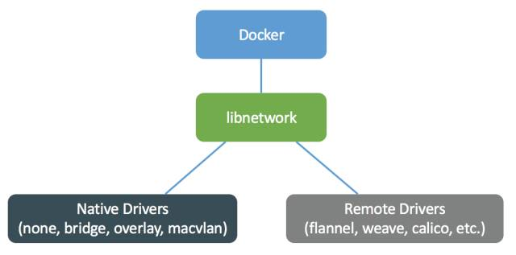

创建网络
Docker跨主机网络方案包括：
- docker 原生的 overlay 和 macvlan。
- 第三方方案：常用的包括 flannel、weave 和 calico。

创建 overlay 网络
docker network create -d overlay ov_net2
docker network create -d overlay ov_net3 --subnet 172.19.0.0/24 --gateway 172.19.0.1
查看 netwrok 状态
[root@manager-1 ~]# docker network ls
NETWORK ID NAME DRIVER SCOPE
cc5cd5eabb87 bridge bridge local
df4c96226ccf docker_gwbridge bridge local
ff0595086328 host host local
ied7pqtp3pvq ingress overlay swarm
z4ehwcl51qws mysqlcluster overlay swarm
d7d2a11f55e2 nexus_default bridge local
4e3fbf78688a none null local
7b4a0049c446 visualizer_default bridge local
服务管理
使用 docker service 命令来管理 Swarm 集群中的服务，该命令只能在管理节点运行。
新建服务
在我们在上一节创建的 Swarm 集群中运行一个名为 nginx 服务。
docker service create --replicas 3 -p 80:80 --name nginx nginx:1.13.7-alpine
现在我们使用浏览器，输入任意节点 IP ,即可看到 nginx 默认页面。
查看服务
使用 docker service ls 来查看当前 Swarm 集群运行的服务。
$ docker service ls
ID NAME MODE REPLICAS IMAGE PORTS
kc57xffvhul5 nginx replicated 3/3 nginx:1.13.7-alpine *:80->80/tcp
使用 docker service ps 来查看某个服务的详情。
$ docker service ps nginx
ID NAME IMAGE NODE DESIRED STATE CURRENT STATE ERROR PORTS
pjfzd39buzlt nginx.1 nginx:1.13.7-alpine swarm2 Running Running about a minute ago
hy9eeivdxlaa nginx.2 nginx:1.13.7-alpine swarm1 Running Running about a minute ago
36wmpiv7gmfo nginx.3 nginx:1.13.7-alpine swarm3 Running Running about a minute ago
使用 docker service logs 来查看某个服务的日志。
$ docker service logs nginx
nginx.3.36wmpiv7gmfo@swarm3 | 10.255.0.4 - - [25/Nov/2017:02:10:30 +0000] "GET / HTTP/1.1" 200 612 "-" "Mozilla/5.0 (Macintosh; Intel Mac OS X 10.13; rv:58.0) Gecko/20100101 Firefox/58.0" "-"
nginx.3.36wmpiv7gmfo@swarm3 | 10.255.0.4 - - [25/Nov/2017:02:10:30 +0000] "GET /favicon.ico HTTP/1.1" 404 169 "-" "Mozilla/5.0 (Macintosh; Intel Mac OS X 10.13; rv:58.0) Gecko/20100101 Firefox/58.0" "-"
nginx.3.36wmpiv7gmfo@swarm3 | 2017/11/25 02:10:30 [error] 5#5: *1 open() "/usr/share/nginx/html/favicon.ico" failed (2: No such file or directory), client: 10.255.0.4, server: localhost, request: "GET /favicon.ico HTTP/1.1", host: "192.168.99.102"
nginx.1.pjfzd39buzlt@swarm2 | 10.255.0.2 - - [25/Nov/2017:02:10:26 +0000] "GET / HTTP/1.1" 200 612 "-" "Mozilla/5.0 (Macintosh; Intel Mac OS X 10.13; rv:58.0) Gecko/20100101 Firefox/58.0" "-"
nginx.1.pjfzd39buzlt@swarm2 | 10.255.0.2 - - [25/Nov/2017:02:10:27 +0000] "GET /favicon.ico HTTP/1.1" 404 169 "-" "Mozilla/5.0 (Macintosh; Intel Mac OS X 10.13; rv:58.0) Gecko/20100101 Firefox/58.0" "-"
nginx.1.pjfzd39buzlt@swarm2 | 2017/11/25 02:10:27 [error] 5#5: *1 open() "/usr/share/nginx/html/favicon.ico" failed (2: No such file or directory), client: 10.255.0.2, server: localhost, request: "GET /favicon.ico HTTP/1.1", host: "192.168.99.101"
删除服务
使用 docker service rm 来从 Swarm 集群移除某个服务。
$ docker service rm nginx
docker compose
在 Swarm 集群中也可以使用 compose 文件 （docker-compose.yml） 来配置、启动多个服务。我们使用 docker service create 一次只能部署一个服务，使用 docker-compose.yml 我们可以一次启动多个关联的服务。
使用 compose
version: "3"
services:
mysql01:
image: voogd/mysql_repl:5.7
ports:
- "3307:3306"
networks:
- mysqlcluster
environment:
- MYSQL_ROOT_PASSWORD=root
- SERVER_ID=1
- BIND_ADDRESS=0.0.0.0
volumes:
- /var/dockerdata/mysqlcluster/mysql01/lib:/var/lib/mysql
- /var/dockerdata/mysqlcluster/mysql01/conf.d:/etc/mysql/conf.d
- /var/dockerdata/mysqlcluster/mysql01/initdb.d:/docker-entrypoint-initdb.d
- /var/dockerdata/mysqlcluster/mysql01/log:/var/log/mysql
deploy:
mode: replicated
replicas: 1
update_config:
parallelism: 1
delay: 60s
restart_policy:
condition: none
max_attempts: 5
placement:
constraints: [node.role == manager]
networks:
mysqlcluster:
external: true
部署服务
部署服务使用 docker stack deploy，其中 -c 参数指定 compose 文件名。
docker stack deploy --compose-file mysql-master.yml mysqlcluster
| 名字，简写 | 默认 | 描述 |
|---|---|---|
| --bundle-file | 分布式应用程序包文件的路径 | |
| --compose-file, -c | Compose文件的路径 | |
| --with-registry-auth | false | 将注册表身份验证详细信息发送给Swarm代理 |
查看服务
docker stack ls[root@manager-1 ~]# docker stack ls
NAME SERVICES
mysqlcluster 3
移除服务
[root@manager-1 ~]# docker stack down mysqlcluster
Removing service mysqlcluster_mysql01
Removing service mysqlcluster_mysql02
Removing service mysqlcluster_mysql03
该命令不会移除服务所使用的 数据卷，如果你想移除数据卷请使用 docker volume rm